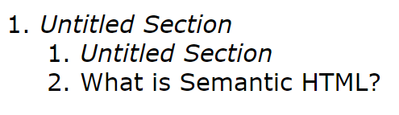

What is Semantic HTML?
Semantic HTML is the idea of a content first and design last approach to semantics. Often times a div is used in every case where the developer wants to section off a for styling, a particular part of the HTML. Divs have lost their semantic value and frameworks have been said to be the main offendors.
Click me and I'll take you to the article on divitis.
The following is the document outline of my HTML. Put in your favorite website and see if they make a liberal use of divs. 